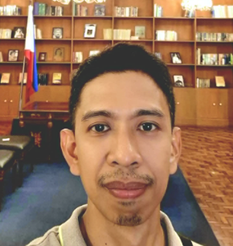

John Cristopher Galicia

Summary
I am an experienced, hardworking and dedicated Software Engineer with 12 years of experience in Software Testing.
An ISTQB Certified Tester, Accenture Certified Application Tester and Accenture Certified Test Designer.
I am currently excited expanding my learning and skills by being an awesome Web Developer.
Education
- Bachelor of Science, Computer Engineering - AMA Computer College (2001-2006)
- Master of Science, Information Technology - Nueva Ecija University of Science and Technology (2017-2022)[Undergraduate]
Work Experiences
-
Computer Technician - VLJuson Computer Systems
January 2006 - June 2006
- Responsible in maintaining all IBM computers to the assigned laboratory
- Assist the learners on the difficulties they may encounter regarding computers and softwares
- Repair broken computers and peripherals immediately
- Install operating system and appication softwares used by the institution
- Perform scheduled monthly preventive maintenance in all computer systems
-
Pick-up Teller/Microfinance Field Assistant - Producers Savings Bank Corporation
June 2006 - May 2008
- Collect and pick-up deposits from clients in their respective businesses
- Prepared paperwork to be presented to the Loan Officer for the creation of legal documents
- Acquire all necessary documentation from the clients for the closing of the loan, as directed by policy and procedure
- Prepare and collect details on maturing loans and do collection efforts on past due loans
- Maintain in-depth understanding of all credits in assigned portfolio
- Independently prepare and monitor specialized loan documentation, including loan agreements and commitment letters
-
Technician/New Product Introduction Engineer - Wistron Infocomm (Philippines) Corporation former
June 2008 - January 2010
- Provided and installed test programs to the different computer platforms including server, desktop, laptop, thin client, LCDTV, GPS and PDAs
- Study/modify and analyze testing flow SOP and implement it to production area
- Implement modified test program in Novell environment for production testing operation
- Responsible for demonstrating every new model test program before motherboard is sent to production area for full testing and repair
- Co-work with Taiwan NPI Team with regards to test program issues and customer complain quality issues
- Responsible for maintaining/updating motherboard BIOS and firmware.
- Technical support to whole production area with regards to PC software and hardware installation problems
- Handles 8 production lines for every motherboard testing process
- Network and System Administrator
- Trained and mentored junior engineers, providing guidance and direction.
-
Technical Assistant - Office of the Municipal Council of Guimba, Nueva Ecija
February 2010 - August 2010
- Provided technical assistance to the Municipal Council Secretary and the Commission on Audit
- Preparation of needed documents for the weekly session of the Municipal Council
- Technical Assistance for the Commision on Audit computer hardware and software needs
- Responsible in maintaining and troubleshooting computers on both agencies
-
Customer Care Specialists - IBM Daksh Business Process Services Philippines Inc.
November 2010 - January 2011
- Provides information in response to inquiries about products and services of the assigned account
- Extending Voice Support for Inbound Customer Service that requires Up selling / Cross-selling and Billing disputes
- Handles and resolves customer complaints
-
Test Engineering Senior Analyst - Accenture Inc.
June 2011 - November 2017
- Designed test, developed procedures for testing products and devised processes for assuring quality production sites
- Developed and maintained defect databases for known issues
- Kept scripts and test cases updated with current requirements
- Authored and maintained well-organized, efficient and successful manual test cases for entire team
- Monitored resolution of bugs, tested fixes, and helped developers tackle ongoing problems by providing QA perspective
- Documented testing procedures for developers and future testing use
- Operated under Agile and Scrum frameworks to complete releases and well-organized sprints
- Advised developers on problems with databases, performance and other issues
- Incorporated delivery requirements into planning of testing schedules
- Designed and reviewed test cases using standard test methodology
- Conducts test planning using test design techniques
- Performed test execution & defect reporting for different test phases (Product, /Integration/Assembly/Component test)
- Captured defects and contributed to defect management
- Used Accenture test assets that help in increasing test quality and productivity
- Involved in Functional testing across different technologies supporting application-under-test
- Participated in test metrics analysis
- SME for iOS mobile application in one project
- Helped/mentored junior associates in team
- Assigned as Project's Business and Continuity Management Coordinator
-
Quality Assurance - Virtual Coworker Pty Ltd Australia
June 2018 - June 2020
- Collaborated with QA team to test software quality through manual testing
- Stress and regression tested regular release fixes, hotfixes and patches
- Verified acceptance by developing and implementing automated and manual application features
- Assessed software bugs and compiled findings along with suggested resolutions for development team members
- Collaborated with product owners to stay current on intended functionality
- Wrote and optimized test cases to maximize success of manual software testing with consistent, thorough approaches
- Optimized test cases to maximize success of manual software testing
-
Quality Assurance Engineer - Switch Automation Philippines Inc.
June 2020 - Current
- Constantly catching and retesting issues and bugs with efficiency
- Created and executed manual and automated software test plans, test cases and test scripts to uncover, identify and document software problems and causes
- Interacted with software application developers and customer service teams to clarify design specifications, test requirements, and address defect resolutions
- Identified development issues by BlackBox, Functional and Non-Functional testing techniques
- Troubleshot with end-users and development teams to reproduce, investigate and debug software
- Used Microsoft Azure, Selenium and Cucumber to create and execute automated test scripts
- Used Microsoft Azure to report, track and monitor defects
- Documented some testing procedures for future testing use
- Monitored resolution of bugs, tested fixes, and helped developers tackle ongoing problems by providing QA perspective
- Gathered data on integration issues and vulnerabilities, reported findings and recommended improvements
- Authored and maintained well-organized, efficient and successful manual test cases for entire team
- Tested functional and compatibility of new features or updates in comparison to existing applications
- Completed in-depth usability testing on different web browsers
- Kept scripts and test cases updated with current requirements
- Built automated test scripts to handle repetitive software testing work
- Operated under Agile and Scrum frameworks to complete releases and sprints
Skills
- Test Planning:⭐️⭐️⭐️⭐️
- Functional Testing:⭐️⭐️⭐️⭐️
- Manual Testing:⭐️⭐️⭐️⭐️
- Defect Tracking and Reporting:⭐️⭐️⭐️⭐️
- User Acceptance Testing:⭐️⭐️⭐️⭐️
- Integration Testing:⭐️⭐️⭐️
- Regression Testing:⭐️⭐️⭐️⭐️
- Requirements Analysis:⭐️⭐️⭐️⭐️
- Scenarios and User Cases:⭐️⭐️⭐️⭐️
- Teamwork and Positive Attitude:⭐️⭐️⭐️⭐️⭐️
- Results and Deadline-Driven:⭐️⭐️⭐️⭐️
- Black Box Testing:⭐️⭐️⭐️⭐️
- Technical Support:⭐️⭐️⭐️
- Web and Mobile App Application testing:⭐️⭐️⭐️
- Software Defect Documentation:⭐️⭐️⭐️⭐️
- Hardware and Software Configuration:⭐️⭐️⭐️
Awards and Certifications
- ISTQB-BCS CERTIFED TESTER FOUNDATION LEVEL (CTFL) - 2014
- APPLICATION TESTER CERTIFICATION - 2014
- APPLICATION TEST DESIGNER CERTIFICATION - 2014
Other